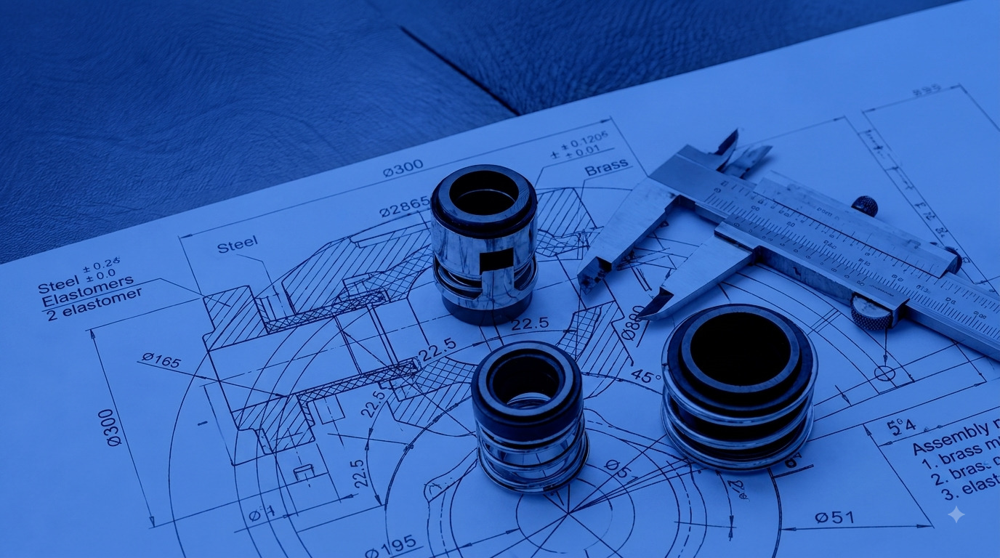
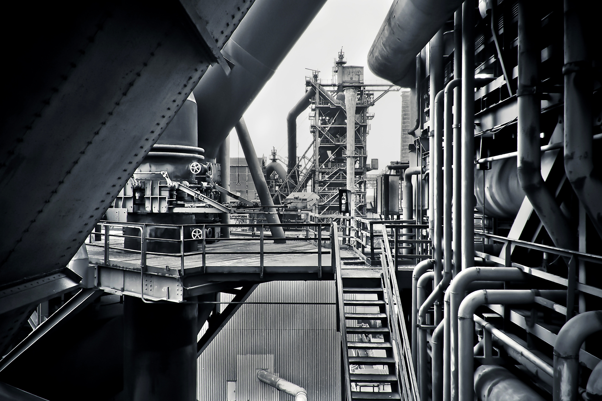
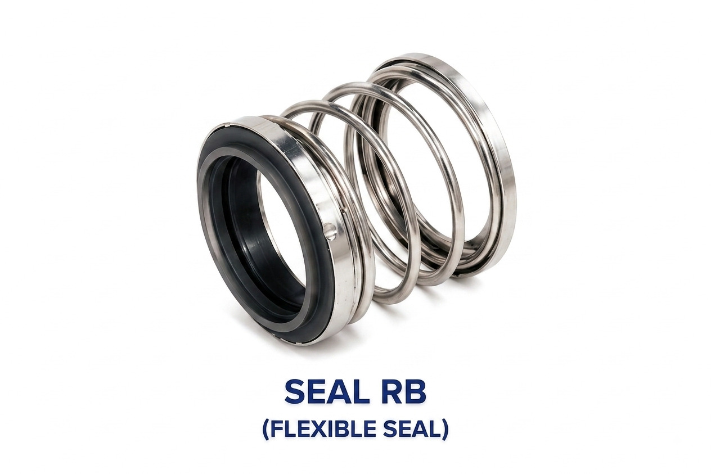

X-5/201, Geeta Nagar, Phase-IV, Opp. Pooja Nagar, Mira Road (E) Dist. Thane - 401107

Explore our extensive range of mechanical shaft seals, pumps, and specialized engineering components.
View Product LineRotodyne Engineering Industries is a manufacturer of mechanical shaft seals based in Mumbai, India. Catering to the diversified requirements of process industries. Rotodyne Engineering Industries offer a wide range of mechanical seals including : Cartridge Seals, Agitator Seals, High Pressure Agitator Seals,Teflon Bellow Seals, Conical Spring Seals, Double Agitator Seals, Rubber Bellow Seals, Metal Bellow Seals, Wave Spring Seals, Reverse Balanced Seals, test rigs for mechanical seals etc. We can supply & manufacture mechanical seals of our own developed & tested design in various field and industrial applications. We can supply equivalent seals of all internationally renowned manufacturers of seal & allied products to save input cost by replacement of seal spares and complete unit. We can supply, manufacture & redevelop spares for canned motor pumps and centrifugal pumps. We can also recondition the canned motor pump.

Explore our precision-engineered mechanical shaft seals designed for diverse industrial applications, extreme temperatures, and demanding operational conditions.

(SUPERIOR PERFORMANCE)
Simple design, constructed by welding a series of diaphragms. Inherently balanced seal built for moderate temperatures.
VIEW DETAILS
(SUPERIOR DESIGN)
Designed for high temperature and torque transmission, exerting no strain on the metal bellows. Apparently balanced construction.
VIEW DETAILS
(SIMPLIFIED DESIGN)
Features extended bellow for exceptional adaptability and longer installation length per DIN 24960 standards.
VIEW DETAILS
(FLEXIBLE SEAL)
Single spring rubber bellow seal that compensates for shaft run-out with superior sealing area and self-aligning pusher seal design.
VIEW DETAILSX-5/201, Geeta Nagar, Phase-IV, Opp. Pooja Nagar, Mira Road (E) Dist. Thane - 401107